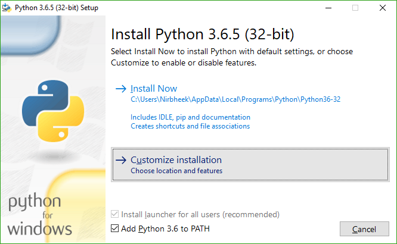

Obtendo o Meson
Meson é implementado em Python 3, e requer a versão 3.6 ou mais nova. se o seu sistema operacional provê um gerenciador de pacotes, você deve instalar o Meson com ele. Para plataformas que não tem um gerenciador de pacotes, você precisa baixa-lo da página inicial do Python. Veja abaixo peculiaridades do Python3 específicas de plataformas.
Baixando o Meson
Releases do Meson podem ser baixadas da [página de releases do GitHub]
e você pode executar ./meson.py de dentro do release ou do próprio repositório
do git sem fazer nada de especial.
No Windows, se você não instalar o Python com a opção do instalador que fazem
os scripts Python executáveis, você vai ter que executar python /path/to/meson.py, onde python é o Python 3.6 ou mais novo.
O código de desenvolvimento mais recente pode ser obtido diretamente do Git, e nós lutamos para garatir que ele vai estar sempre funcionando e usável. Todos commits passam por um processo de pull-request que executa CI e testam diversas plataformas.
Instalando o Meson com o pip
O Meson está disponível no Indice de Pacotes do Python e pode ser instalado com
sudo pip3 install meson que requer root e vai instala-lo para todo o sistema.
Se você já baixou uma cópia do código do Meson, você pode instalar com
sudo pip3 install path/to/source/root/.
Como alternativa, você pode usar o pip3 install --user meson que vai instalar
o Meson para o seu usuário e não requer nenhum privilégio especial. Esse comando
vai instalar o pacote em ~/.local/, então você terá que adicionar ~/.local/bin
para o seu PATH, e sudo meson install vai estar completamente quebrado já que
o programa não vai estar disponível para o root. Apeas use uma cópia de usuário do Meson
se você não se importa sobre instalar os projetos como root.
Instalando o Meson e o Ninja com o instalador MSI
Nós provemos um instalador MSI na página de release do GitHub que pode ser usada para instalar tanto o Meson quanto o Ninja de uma vez para o Windows. O instalador também contém uma cópia integrada do Python, então scripts que usam o módulo Python e não tem nenhuma dependência externa vão continuar funcionando como esperado.
Por favor, note que essa é uma funcionalidade nova, então relatórios de bugs são esperados e bem-vindos!
Dependências
Na maioria dos casos comums, você vai precisar do executável do Ninja para usar o backend do ninja,
que é o padrão no Meson. Esse backend pode ser usado em todas plataformas e com todas toolchains, incluindo o GCC,
Clang, Visual Studio, MinGW, ICC, ARMCC, etc.
Você deve usar a versão provida pelo seu gerenciador de pacotes se possível, caso contrário, baixe o binário executável da página de release do projeto Ninja.
Se você apenas usa o backend do Visual Studio (--backend=vs) para gerar soluções do Visual Studio no Windows ou o
backend do XCode (--backend=xcode) para gerar projetos no macOS, você não precisa do Ninja.
Peculiaridades de instalação específicas de plataformas
Peculiaridades do Python 3 no Windows
Quando estiver instalando o Python 3, é altamente recomendável (mas não obrigatório) que você selecione as opções do instalador como a seguir:



Com isso, você terá o python e o pip no PATH, e você poderá instalar o Meson com o pip. Você também vai poder
executar o comando meson em qualquer shell no Windows ao invés de ter que executar py -3 com o caminho completo para
o script meson.py.
Peculiaridades do Python 3 no MSYS2
Se você está usando o MSYS2 no Windows como seu ambiente de desenvolvimento,
por favor se certifique que você não esteja usando o pacote msys/python para
fornecer o Python 3. Uso o mingw32/mingw-w64-i686-python3 ou o
If you are using MSYS2 on Windows as your development environment,
please make sure that you do not use the msys/python package to
provide Python 3. Use either mingw32/mingw-w64-i686-python3 or mingw64/mingw-w64-x86_64-python3
dependendo de para qual target do MinGW você está compilando.
The results of the search are